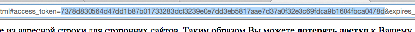

ВНИМАНИЕ! Вы используете сервис исключительно на свой страх и риск. Разработчик не несёт никакой ответственности за последствия и ваши действия. Использование непроверенных прокси-серверов небезопасно и может привести (приведёт) к утечке ваших персональных данных.
id пользователя ВКонтакте
ключ доступа
прокси
Ключ доступа - символы, выделенные на этом рисунке (после перехода по ссылке нажать кнопку "разрешить")

Для полноценной работы нужно использовать прокси. Страна где расположен прокси-сервер должна совпадать со страной вашего аккаунта. В поле "прокси" необходимо ввести хост/порт прокси-сервера который вы хотите использовать. Получить актуальный список прокси можно по ссылке. Вводить нужно символы, выделенные на этом рисунке. Безопаснее всего использовать в качестве прокси свой компьютер.